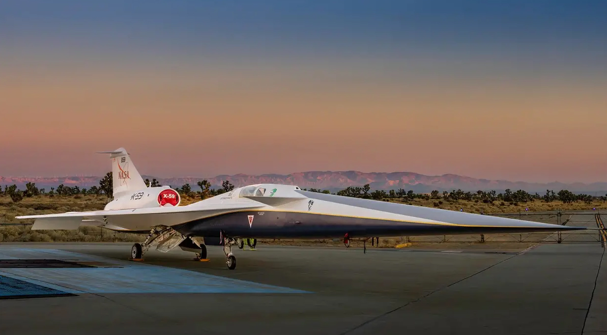

Novosti
Plenković će u zatvor trpati one koji se bore protiv korupcije!
U zakonu je dodano kako novinari neće moći kazneno odgovarati. Ali to ne mijenja puno na stvari. DORH će goniti ljude koji su pomogli novinarima, pa i za benigne stvari, primjerice, otkrili imena uhićenih Više ...

Sjajna vijest za navijače: Novi termin polufinala vaterpolista!
Prema prvotnom planu u razmaku od samo 15 minuta trebale su početi utakmice vaterpolske i rukometne reprezentacije na Euru, no Hrvatski vaterpolski savez tražio je i dobio raniji termin Više ...

NASA predstavila X-59 avion: Vratit će nadzvučne letove, bez zvuka probijanja zvučnog zida
X-59 je dizajniran da leti na visini od oko 16 kilometara brzinom od 1500 kilometara na sat. Umjesto glasnog praska, proizvodi samo zvuk jednako glasan kao lupanje vratima automobila Više ...